السؤال 7

الجواب الصحيح: 2
من الواجب عليا نوقف و نعطي حق الأسبقية لهذا الراجلين.
25 سؤال
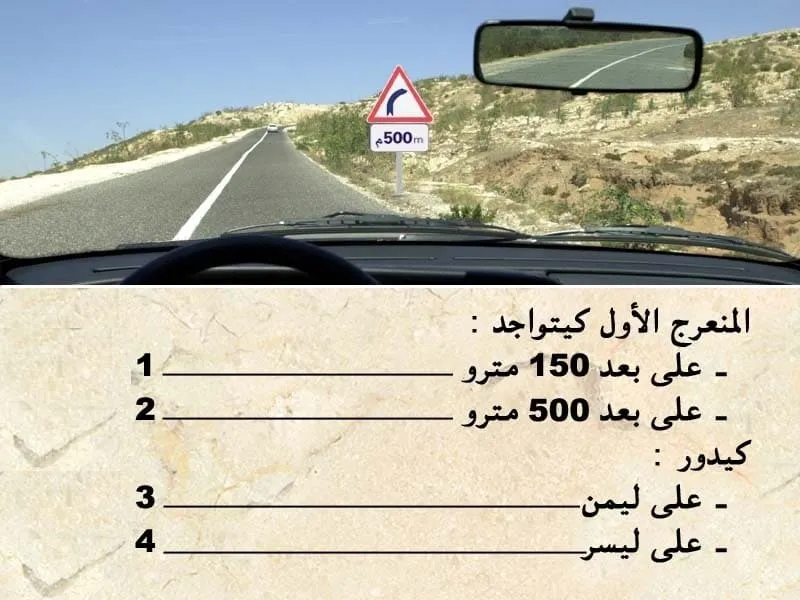
الجواب الصحيح: 2 و 3
هذا العلامة ديال الخطر.
-كتعلم على منعرج خطير على ليمن .
- الخطر خارج التجمع السكني كيكون على بعد 150 متر .ولكن تحت العلامة كاين علامة تكميلية فيها 500 متر .و بالتالي الخطر اصبح على 500 متر .
يعني الجواب الصحيح هو 23.
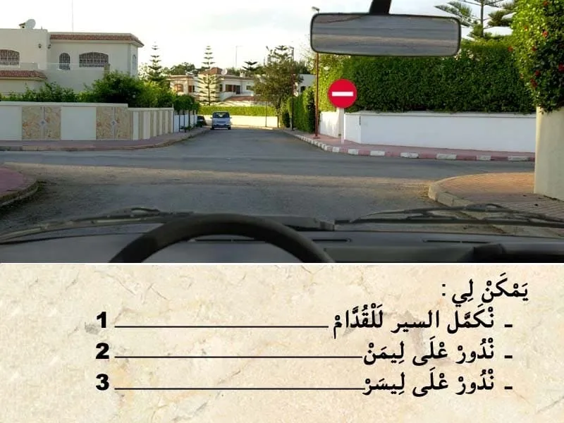
الجواب الصحيح: 2 و 3
هذا العلامة ديال المنع.
- ⛔ كتمنع المرور للقدام .
و بالتالي يمكن لي ندور على ليمن و على ليسر.
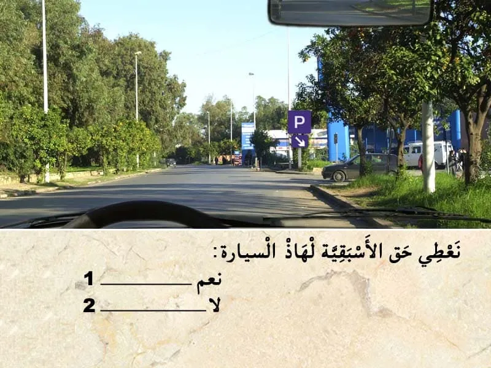
الجواب الصحيح: 2
في هذا الحالة عندي ملتقى طرق مع طريق خارجة من موقف ديال السيارات .
يعني خارجة من طريق تانوية. في هذا الحالة ما غاديش تطبق القاعدة ديال لي ليمن ديالوا خاوي يدوز .
✅ هنا لي غادي في الطريق الرئيسية هو لي عند حق الأسبقية.
ثاني حاجة دائما في الخرجة من موقف السيارات كيكون دائما علامة قف.
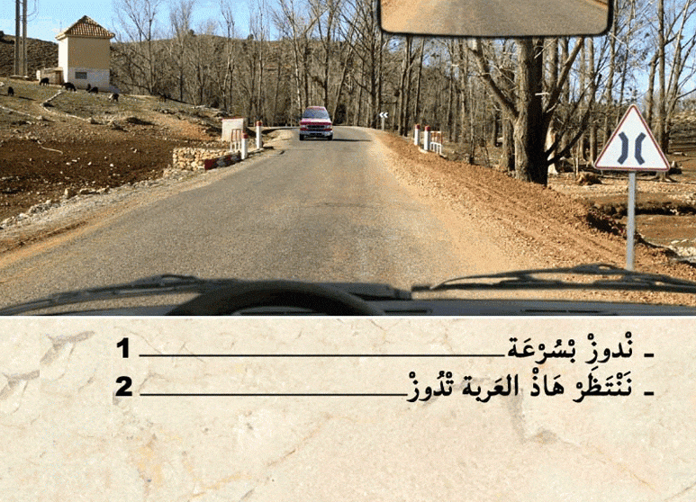
الجواب الصحيح: 2
هذا العربة دات الأولوية .مشغلة ضوء الاستعجال .
بالإضافة إلى أنها سبقت هي الأولى للقنطرة و بالتالي واجب عليا نعطيها حق الأسبقية.
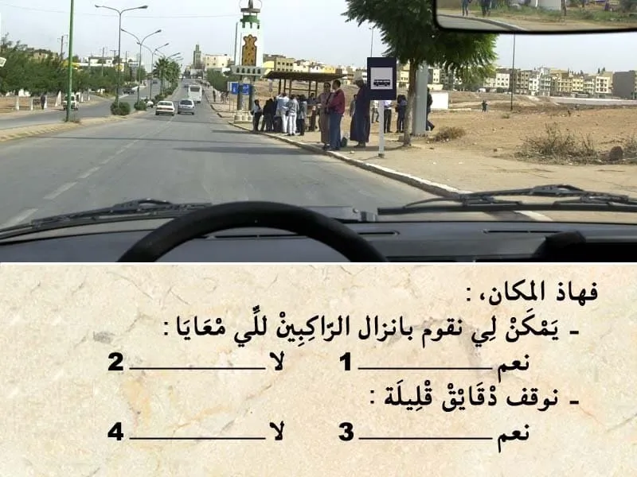
الجواب الصحيح: 2 و 4
هذا العلامة ديال الإرشاد.
كتعلم على أن هذا المكان خاص بالحافلات و بالتالي ممنوع عليا نوقف او نوقف في هذا المكان.
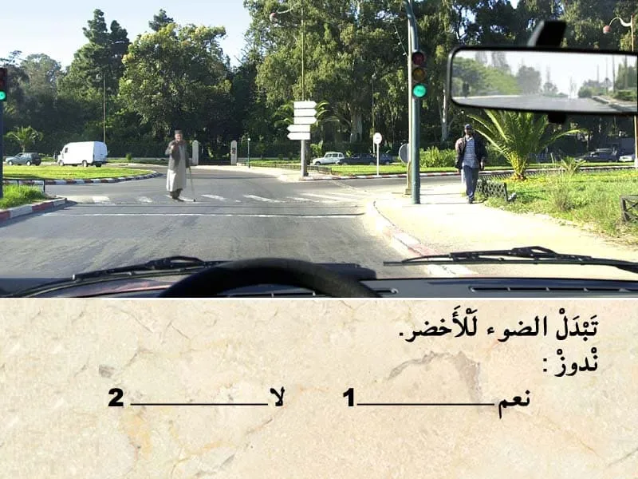
الجواب الصحيح: 2
في هذا الحالة كاين هذا الراجل في ممر ديال الراجلين. و بالتالي واجب عليا نوقف و نعطي حق الأسبقية.
الجواب الصحيح: 2
من الواجب عليا نوقف و نعطي حق الأسبقية لهذا الراجلين.

الجواب الصحيح: 1
المركبات الخاصة كيتم تجديد المراقبة التقنية كل سنة .
و المراقبة التقنية الأولى كتكون قبل متم 5سنوات من تاريخ أول شروع في الاستخدام
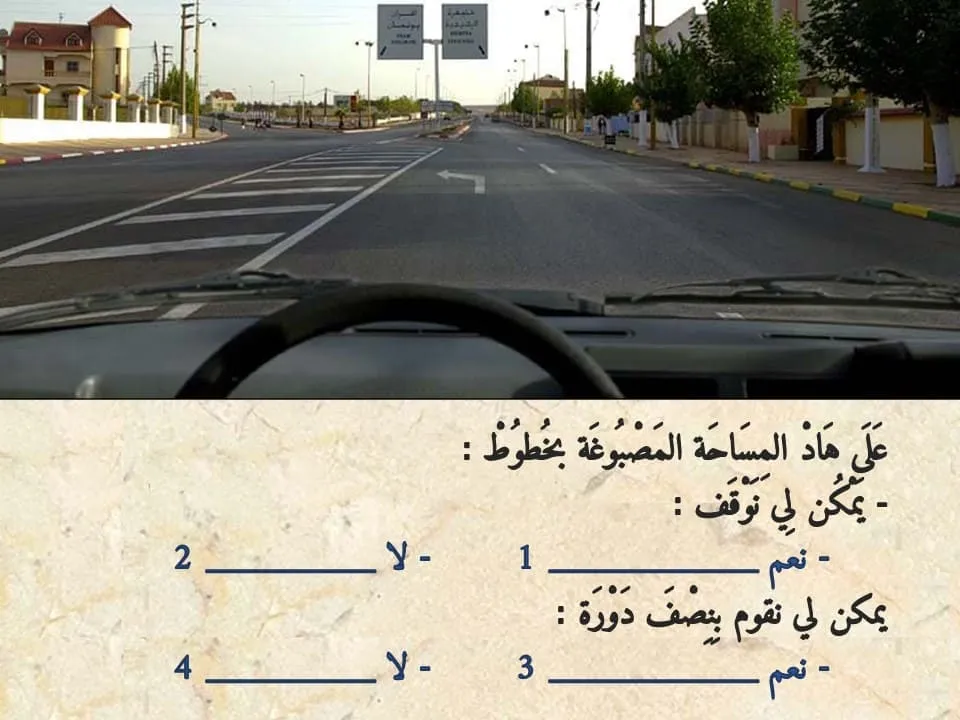
الجواب الصحيح: 2 و 4
المساحة المصبوغة بخطوط. كتعلم على مكان خاص بالعربات دات الأولوية.
و بالتالي ما يمكنش ليا نستعملوا ، لا للتوقف و لا لسير العادي ، و لا للقيام بنصف دورة
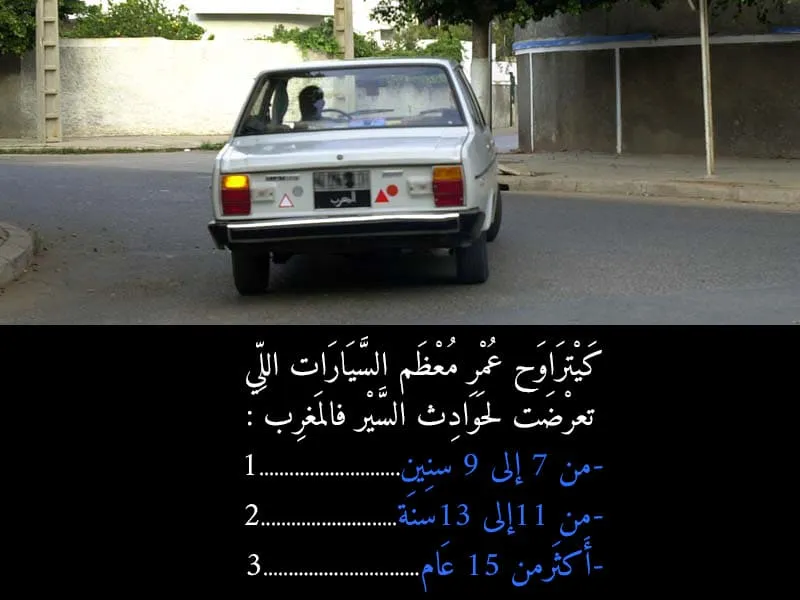
الجواب الصحيح: 3
كيترواح اعمار معظم السيارات لي تعرضت لحوادث السير في المغرب .
عمرها اكثر من 15 عام .
نظرا للحالة الميكانيكية لاجزاء السلامة مثل المكابح و العجلات ......
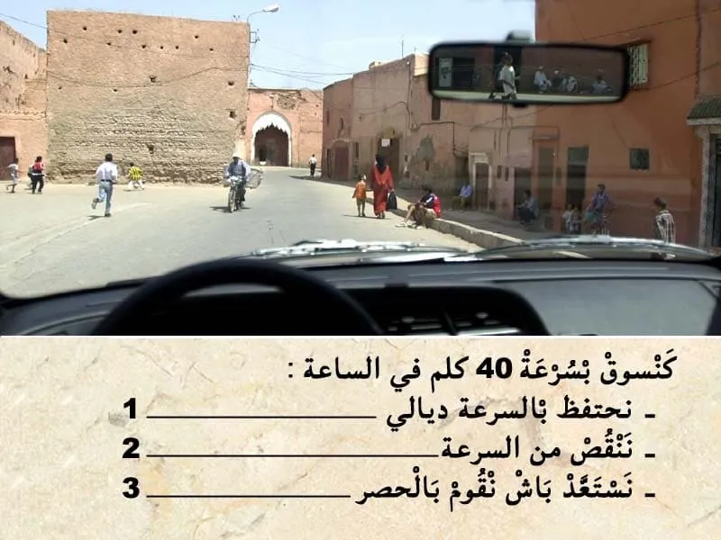
الجواب الصحيح: 2 و 3
في هذا الحالة انا في مكان كيتواجدوا فيه الاطفال و بالتالي من الواجب عليا ننقص من السرعة و نستعد باش نقوم بالحصر.
حيت السلوك ديال الاطفال كيكون غير متوقع.
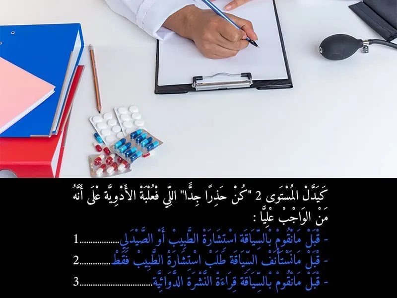
الجواب الصحيح: 1
في علبة الادوية كيدل المستويات على نوع الخط :
- كيدل المستوى 1 على انني قبل ما نقوم بالسياقة واجب عليا نقوم بقراءة النشرة الدوائية.
- كيدل المستوى 2 على انه قبل ما نقوم بالسياقة
من الواجب عليا نستشر مع الطبيب او الصيدلي . باش نعرف واش يمكن لي نسوق الا خديث الدواء ولا لا.
- كيدل المستوى 3 على انه قبل ما نستأنف السياقة ,من الواجب عليا نستشر مع الطبيب فقط . باش نعرف واش يمكن لي نسوق الا خديث الدواء ولا لا.
يعني المستوى 3 فقط الطبيب هو لي يمكن ليه يعطيك الاذن باش تسوق.
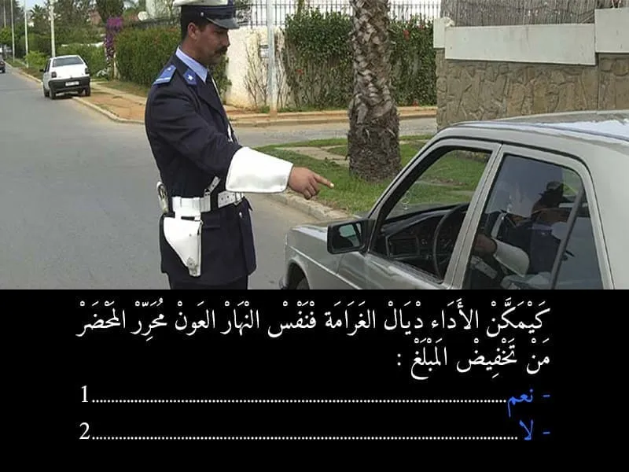
الجواب الصحيح: 1
الا خلصتي المخالفة في نفس اليوم لي وقعات فيه المخالفة . كيتم تخفيظ المبلغ .
مثلا الا ما احترمتيش علامة قف . الغرامة هي 700 درهم و لكن الا قمتي بالاداء في نفس النهار كتصبح 400 درهم.
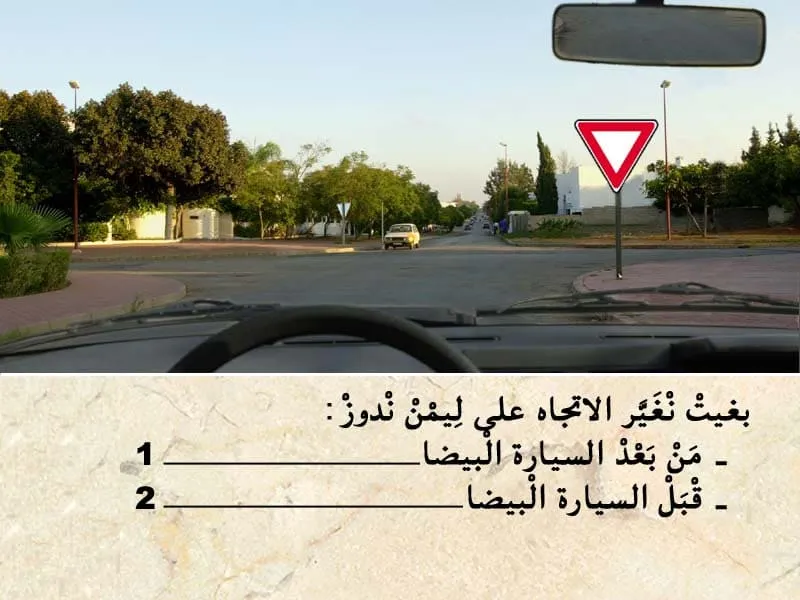
الجواب الصحيح: 2
هذا العلامة ديال اعطاء حق الأسبقية.
في ملتقى طرق كروازمة واجب عليا نعطي حق الأسبقية للي جاي من ليمن و لي جاي ليسر و في حالة كنت غادي ندور على ليسر واجب عليا نعطي حق الأسبقية للي جاي في الإتجاه المعاكس.
في هذا الحالة انا غادي ندور على ليمن و بالتالي ندوز انا الاول.
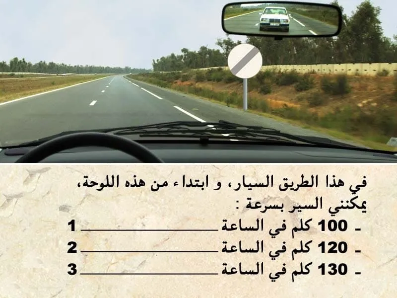
الجواب الصحيح: 1 و 2
هذا العلامة ديال نهاية المنع .
- كتعلم على نهاية جميع انواع المنع "التجاوز ،السرعة , المنبه الصوتي".
ابتداء من العلامة يمكن لي نسير بسرعة 120 كلم في الساعة حيت أنا داخل الطريق السيار.
⛔ ما يمكنش لي نمشي ب 130 كلم في الساعة .
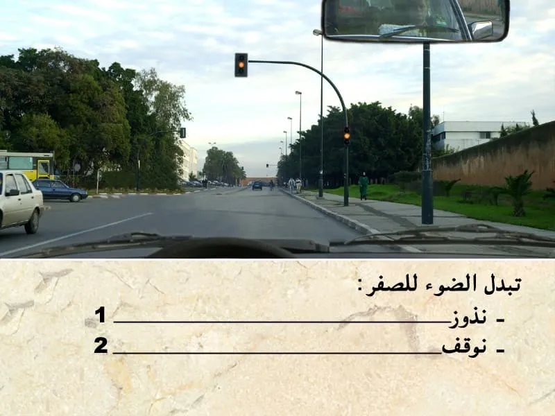
الجواب الصحيح: 2
الضوء الأصفر كيعلم على انه مباشرة غادي يشعل الضوء الاحمر و بالتالي نوقف.

الجواب الصحيح: 2
سياقة مركبة برخصة سياقة مزورة كتعتبر جنحة و كيتعاقب السائق بعقوبة بالحبس لمدة 3 سنين على الأقصى.
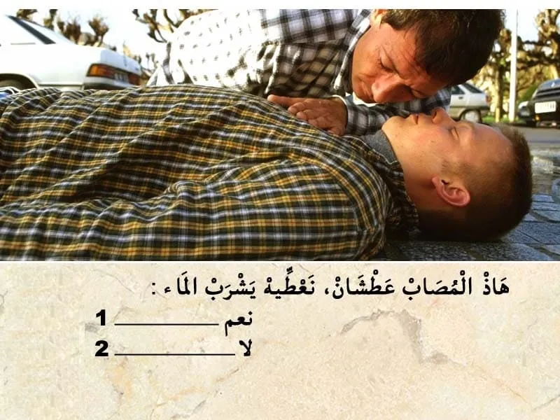
الجواب الصحيح: 2
إغاثة الجرحى :
💡 في جميع الحالات يجب:
✔ إزالة الأشياء التي تعيق التنفس بالنسبة للمصاب؛
✔ تغطية الضحايا وكذا الجرحى لتفادي البرد؛
✔ التكلم مع المصابين والاطمئنان على حالتهم و التهدئة من روعهم ومحاولة إبقائهم في حالة وعي.
💡 في حالة التوفر على شهادة للإسعافات الأولية يجب :
✔ وضع المصاب على الجانب الأيمن وفي الوضعية الصحيحة (الوضعية الجانبية للسلامة أو وضعية الإفاقة)؛
✔القيام بعملية التنفس الاصطناعي إذا اقتضت الضرورة ذلك.
يقدر عدد النفخات بالنسبة للبالغين من 12 إلى 15 نفخة في الدقيقة مقابل 24 إلى 30 نفخة في الدقيقة بالنسبة للأطفال.

الجواب الصحيح: 1
نعم السياقة بسرعة منخفظة كتقلل من مخاطر الحوادث المميتة.

الجواب الصحيح: 2
منين نلقى حادثة و ما تكونش رجال الاسعاف في عين المكان من الواجب عليا نوقف و نقدم الإغاثة بمجرد ما توفر لي الشروط المناسبة .
في هذا الحالة كاين رجال الاسعاف و بالتالي ما واجبش عليا نوقف باش نقدم الإغاثة.
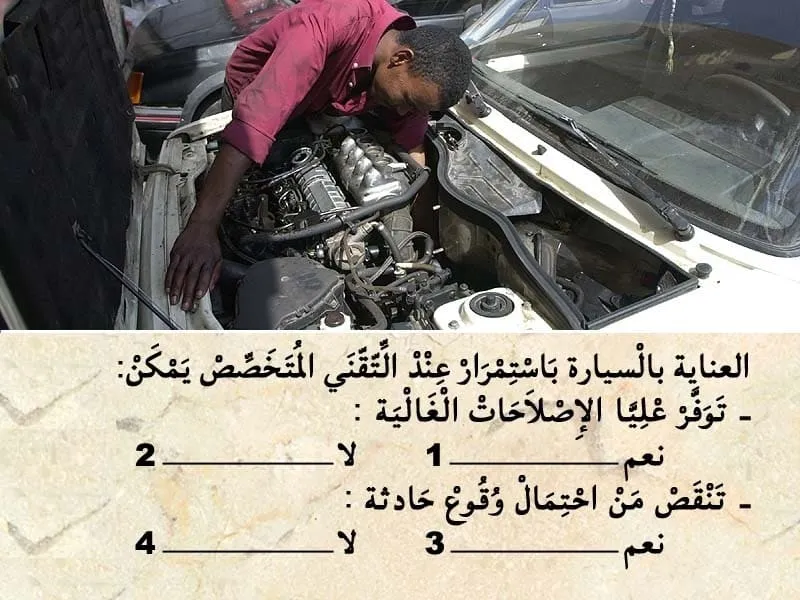
الجواب الصحيح: 1 و 3
العنايه بالسيارة باستمرار.
كتحد من اخطار وقوع أعطاب و بالتالي كتزيد من مدة صلاحية السيارة.
و كتوفر الإصلاحات الغالية .
و كتنقص من احتمال وقوع أعطاب.
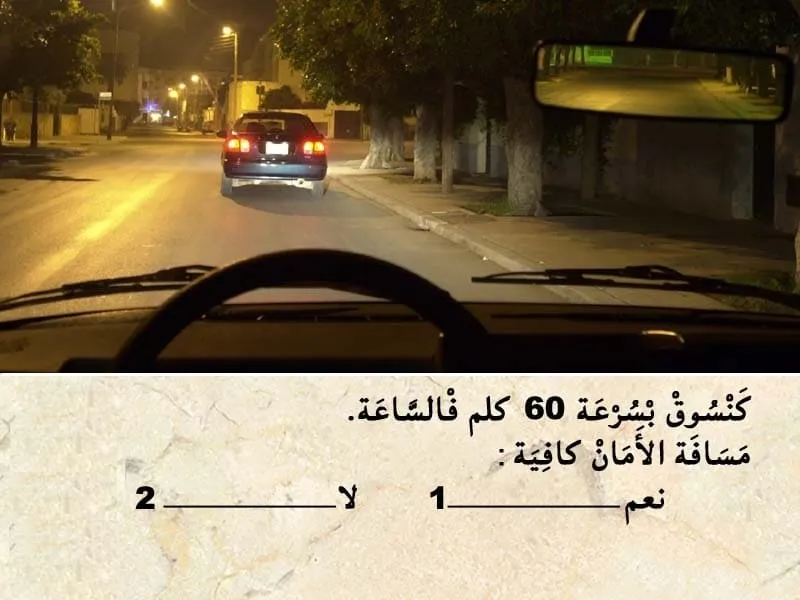
الجواب الصحيح: 2
مسافة الامان هي عشر السرعة مضروبة في 6 .
في هذا الحالة كنسير ب 60 كلم في الساعة.
- و بالتالي مسافة الامان هي 6*6 = 36 متر .
يمكن لي نحسب مسافة الامان بالاعتماد على المسافة بين الاشجار.
ما بين كل شجرة و شجرة كاين 10 متر .
في هذا الحالة بيني و بين العربة لي قدامة مسافة تقريبا ديال 20 متر .
و بالتالي مسافة الامان غيركايفة
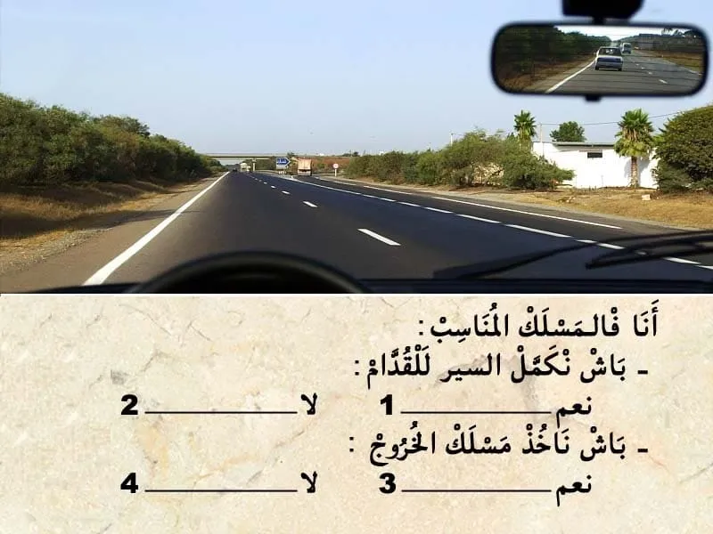
الجواب الصحيح: 2 و 4
في هذا الحالة انا كنسير في مسلك التجاوز . و بالتالي انا ماشي في المكان المناسب :
- باش نكمل السير للقدام واجب عليا نكون في المسلك ديال السير العادي.
- و في هذا الحالة ما يمكنش ليا ناخذ مسلك الخروج .خاصني نرجع للمسلك لي في اقصى اليمين باش نقدر ناخد مسلك الخروج من الطريق السيار.

الجواب الصحيح: 1
مستوى زيت هذا المحرك ما بين الحد الاقصى و الحد الأدنى و بالتالي مضبوط.

الجواب الصحيح: 2
فهذا ملتقى الطرق بغياب التشوير الطرقي . الأسبقية للي جاي من جهت ليمن .
فهذا الحالة انا لي ليمن ديالي خاوي يعني انا لي ندوز الاول.